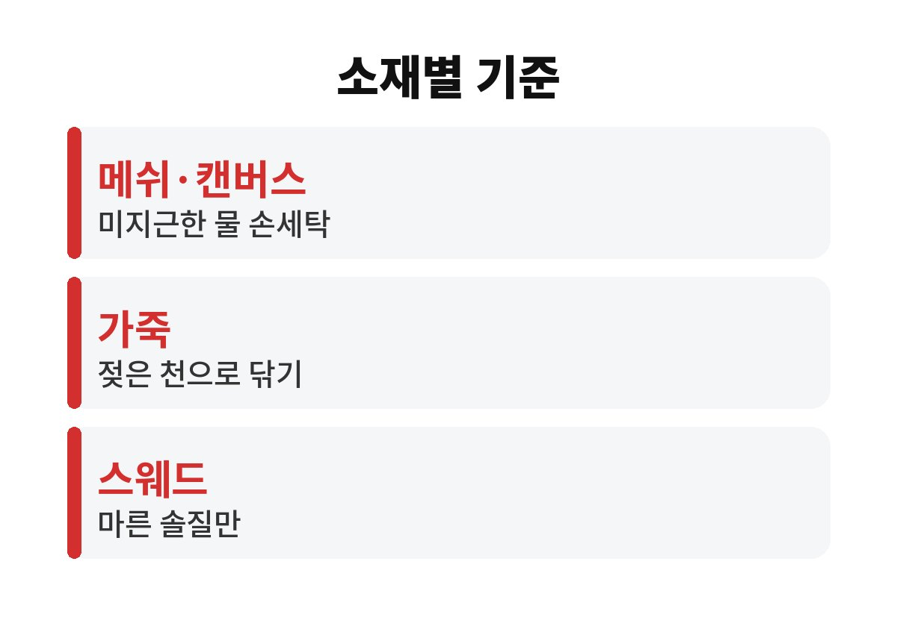
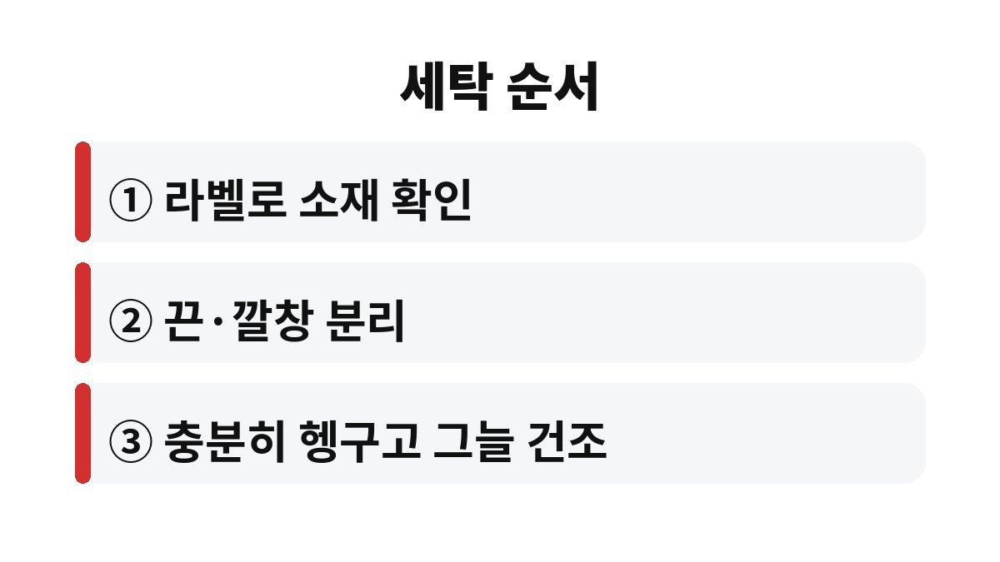

운동화 세탁은 소재에 따라 물에 담가도 되는 신발과 물이 닿으면 안 되는 신발로 먼저 나뉜다.
메쉬와 캔버스는 미지근한 물 손세탁이 가능하지만, 가죽과 스웨드는 물세탁보다 겉면 닦기와 솔질로 관리한다.
신발 혀 안쪽이나 깔창 아래 라벨에 소재가 적혀 있으니 그것부터 본다.
운동화는 겉감, 안감, 밑창이 접착제로 붙어 있는 구조다.
겉감이 물을 머금는 정도와 접착 부위가 열에 버티는 정도가 소재마다 달라서 같은 방법을 쓰면 어떤 신발은 멀쩡하고 어떤 신발은 망가진다.
표로 보면 차이가 바로 보인다.
라벨은 보통 신발 혀 안쪽에 꿰매져 있거나 깔창을 들어 올린 바닥에 인쇄되어 있다.
겉감, 안감, 밑창 소재가 따로 적혀 있는데 세탁 방법을 고를 때는 겉감 소재를 기준으로 삼는다.
물통 그림에 엑스 표시가 있으면 물세탁을 하지 말라는 뜻이다.
해외 브랜드 신발은 영어로 Mesh, Leather, Suede처럼 적혀 있어서 표의 소재와 바로 맞춰 볼 수 있다.
| 소재 | 물세탁 | 주로 생기는 문제 | 관리 방법 |
|---|---|---|---|
| 메쉬 | 미지근한 물 손세탁 | 보풀, 그물 사이 찌든 때 | 부드러운 솔로 결 따라 닦기 |
| 캔버스 | 미지근한 물 손세탁 | 누런 얼룩, 색 빠짐 | 중성세제 희석해 부분 세척 |
| 천연가죽 | 권하지 않음 | 갈라짐, 딱딱해짐 | 젖은 천으로 닦고 그늘 건조 |
| 스웨드·누벅 | 권하지 않음 | 털 눌림, 물 얼룩 | 마른 솔질과 전용 지우개 |
표에서 물세탁을 권하지 않는다고 한 신발도 겉감 일부만 가죽인 경우가 있다.
앞코와 뒤꿈치만 가죽이고 나머지가 메쉬인 운동화가 흔한데, 이런 신발은 통째로 물에 담그지 않는다.
메쉬 부분만 솔로 부분 세척하고 가죽 부분은 젖은 천으로 따로 닦는다.
소재가 섞인 신발을 한 가지 방법으로 처리하려다 가장 약한 소재가 상하는 경우가 많다.

메쉬는 물에 강하지만 그물 구조라 세게 문지르면 올이 일어난다.
끈과 깔창을 먼저 빼고, 미지근한 물에 중성세제를 풀어 칫솔 정도의 부드러운 솔로 결을 따라 닦는다.
뜨거운 물은 쓰지 않는다.
밑창 접착 부위가 약해져 앞코가 벌어지는 원인이 된다.
흰 캔버스화가 마른 뒤 누렇게 변하는 것은 세제와 때가 덜 빠진 채로 마를 때 흔히 생긴다.
그래서 나는 문지르는 시간보다 헹구는 시간을 더 길게 잡는다.
색이 진한 캔버스는 처음 빨 때 물이 빠질 수 있으니 흰 옷이나 다른 신발과 같이 담그지 않는다.
천연가죽은 물에 오래 닿으면 기름기가 빠져 마른 뒤 갈라지기 쉽다.
젖은 천을 꼭 짜서 겉면만 닦고, 마른 천으로 물기를 다시 훔친다.
스웨드와 누벅은 물 얼룩이 생기면 오히려 더 티가 나서 마른 상태에서 솔로 털을 세우는 정도만 한다.
얼룩이 깊이 밴 가죽 신발은 집에서 붙잡고 있기보다 신발 전문 세탁에 맡기는 편이 결과가 낫다고 본다.
운동화 끈은 미지근한 세제 물에 따로 담가 두었다가 손으로 비벼 빨면 된다.
깔창은 땀이 가장 많이 배는 부분이라 냄새가 날 때는 본체보다 깔창을 먼저 빤다.
고무 밑창 테두리의 검은 줄은 솔에 세제를 묻혀 문지르면 대부분 지워진다.
이 부분만 깨끗해져도 신발 전체가 한결 새것처럼 보여서, 나는 가죽 운동화도 밑창 테두리만큼은 꼭 닦는다.

세탁기 사용은 신발 라벨에 허용 표시가 있을 때만 생각한다.
표시가 없는 운동화를 세탁기에 넣으면 통 안에서 부딪히며 밑창이 들뜨거나 모양이 틀어질 수 있다.
나는 겨울에 빨래가 잘 안 마르는 날에는 운동화 세탁을 미룬다.
덜 마른 채로 신으면 안쪽에서 쉰내가 올라와 결국 다시 빨게 되기 때문이다.
비 오는 날 젖은 운동화를 현관에 그대로 벗어 두면 다음 날 아침 안쪽이 축축하고 냄새가 난다.
이럴 때는 바로 깔창을 빼고 신문지를 채운 뒤 끈을 느슨하게 풀어 앞코가 위로 가도록 세워 두면 마르는 시간이 줄어든다.
신문지는 몇 시간 뒤 한 번 갈아 주면 물기를 더 빨리 뺀다.
보일러 바닥이나 난로 바로 앞에서 말리면 빨리 마르기는 하지만 접착 부위가 들뜨고 가죽이 뒤틀릴 수 있어서 나는 피한다.
다 마른 운동화는 겉면에 남은 세제 자국이 없는지 한 번 더 본다.
흰 운동화 가장자리에 하얀 줄이 남아 있으면 덜 헹군 것이니, 젖은 천으로 그 부분만 닦아 내면 된다.
가죽 운동화는 완전히 마른 뒤 손에 묻지 않을 만큼 가죽 보호제를 얇게 바르면 갈라짐이 덜하다.
스웨드는 마른 뒤 솔로 털 방향을 한쪽으로 정리해 두면 눌린 자국이 덜 보인다.
다음에 운동화를 사면 라벨을 사진으로 찍어 두면 된다.
라벨이 닳아 소재를 알 수 없다면 물세탁보다 겉면 닦기부터 해 보고, 그래도 안 지워지는 얼룩만 세탁 전문점에 문의한다.
※ 2026년 기준 공공기관 안내를 바탕으로 정리한 글이며, 집 구조와 제품에 따라 결과가 다를 수 있어 제품 설명서를 함께 확인하길 바란다.